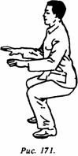
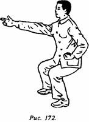
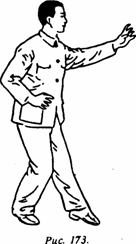

300 вопросов о цигун. Секреты китайской медицины. Содержание
Имеется очень много методов испускания внешнего ци, но их тренировочная цель одна и та же, а именно: путем длительных тренировок с использованием какого-либо метода гармонизировать внутреннее ци человеческого организма, накопить его внутри тела, а в нужное время, используя определенные AT, испускать наружу. Ниже приведен один из основных тренировочных методов испускания внешнего ци.
(1) Подготовительные движения.
1) Хорошенько выполнить гимнастику суставов (см. разд. по методике гимнастики суставов).
2) Выполнить 100-200 раз нанесение удара кулаками в "позе всадника" ("поза всадника" выполняется в низком приседании, в основном движение воспроизводит нанесение ударов кулаками "в позе всадника" при выполнении "цигуна Великого Предела", но удары кулаками в данном случае должны выполняться в более быстром темпе и с большей силой).
(2) Позы.
1) "Корни глубоко в земле" (шэнь гэнь цзай ди) (рис. 171).

Ноги стоят прямо и ровно, расставленные на ширину плеч (по внутреннему краю ступни); верхняя часть корпуса тела прямая, голова и шея выпрямлены; глаза смотрят спокойно, губы и зубы втянуты, сомкнуты, грудь подтянута, спина не напряжена; плечи слегка опущены, локти висят вниз; полная безмятежность, мышцы всего тела максимально расслаблены; начинают выполнять приседание, ягодицы опускаются вниз, коленные суставы сгибаются таким образом, что бедро и голень образуют примерно прямой угол, при этом проекция коленной чашечки не должна выходить за линию стопы.
2) "Меч, парящий в воздухе" (кун чжун фэй цзянь) (рис. 172).

Поза в основном такая же, как и предыдущая, только левая рука, сжатая в кулак и обращенная внутренней стороной вверх, находится на талии, а пространство между большим и указательным пальцами смотрит наружу. Правая рука вытянута прямо вперед на уровне плеча, пальцы сложены, как при работе с мечом (указательный и средний пальцы, прижатые друг к другу, выпрямлены вперед, безымянный и мизинец полусогнуты, большой палец выпрямлен вперед и вверх). Ладонь обращена вовнутрь либо вниз. Плечо, рука и указательный со средним пальцем образуют одну линию.
3) "Драконо-орлиная поступь" (лун ин куа бу) (рис. 173).

Встать в естественную позу, руки выпрямлены, ладони обращены вверх; поднимают руки до уровня груди, левая ладонь наверху, правая ладонь обращена вниз. В это время левая нога начинает движение вперед, делая полушаг; коленный сустав выпрямлен, стопа натянута (как струна), пальцы касаются земли. Правая нога сгибается в коленном суставе (угол сгиба примерно 120°), верхняя часть тела сохраняет прямое положение, центр тяжести тела находится на правой ноге. Одновременно с этим правая рука опускается вниз, к пояснице, ладонь обращена книзу, пальцы раздвинуты и обращены вперед, согнутые, словно когти орла, как будто что-то прижимают вниз. Левая рука со слегка согнутым локтем вытянута вперед и вверх, при этом пространство между большим и указательным пальцами находится на уровне глаз, ладонь смотрит вправо; пальцы раздвинуты и направлены вверх, согнутые подобно орлиным когтям; глаза смотрят прямо вперед. Правая нога неподвижна; только когда центр тяжести тела начинает переноситься вперед на левую ногу, делается полшага вперед правой ногой; коленный сустав выпрямляется; стопа вытягивается в струнку, пальцы ног упираются в землю. Левая нога сгибается в коленном суставе (угол сгиба примерно 120°), верхняя часть корпуса тела по-прежнему сохраняет прямое положение. Одновременно с этим левая рука опускается вниз, к пояснице, ладонь обращена книзу, пальцы раздвинуты; двигаясь вперед, как когти орла, они как будто что-то придавливают книзу; правая рука со слегка согнутым локтем вытягивается вперед и вверх, при этом пространство между большим и указательным пальцами находится на уровне глаз; ладонь обращена влево, раздвинутые пальцы, как когти орла, они направлены вверх, при этом ладонь также обращена влево. Левая нога неподвижна, затем ею делают полшага вперед, и вновь повторяются ранее описанные движения.
(3) Дыхание. Главное - это естественное дыхание.
(4) Концентрация. Следует использовать метод концентрации на "благих сущностях".
(5) Время проведения занятий. Ежедневно можно заниматься 1-2 раза, обычно после обеда или вечером. Длительность каждого занятия 20-60 мин.
(6) Важные моменты.
1) Необходимо точно выполнять позы, тренироваться упорно, расслаблять соответствующим образом тело.
2) Приняв правильную позу, можно отвлечься приличествующей беседой, также можно послушать успокаивающую, приятную музыку, но при этом нельзя выполнять какие-либо движения телом.
3) Во время занятий дыхание должно быть естественным, следует применять метод концентрации на "благих сущностях", недопустимо ругаться или злиться.
4) Перед занятиями можно выпить стакан горячей жидкости, нельзя заниматься голодным или плотно поев.
5) Перед началом занятий нужно выполнить подготовительные упражнения. Последовательность занятий такова: вначале выполняется комплекс "корни глубоко в земле", длительность каждого занятия примерно около часа. Позанимавшись этим комплексом год, можно начать осваивать второй комплекс - "меч, парящий в воздухе". После годичных занятий, освоив его, можно приступать к третьему комплексу - "драконо-орлиная поступь".
6) Во время занятий правильно выполнять позы, следовать их естественности, не надо стремиться вызвать различные ощущения.
7) Во время занятий в руках может возникнуть ощущение тепла, может даже быть так, что все тело нагреется и вспотеет, это хороший признак. Если во время занятий возникнет ощущение холода, то надо остановиться, выполнив завершающее упражнение по "обретению воздействий" и продолжить их через день.
8) Необходимо подобрать требуемую длительность и интенсивность занятий. На начальном этапе не следует заниматься чрезмерно интенсивно, нужно избегать переутомления. После занятий возможно появление болей в коленных суставах, это обычное явление; но необходимо усилить контроль за количеством движений. Если нагрузка слишком велика, то может возникнуть нежелательная реакция.
9) На начальном этапе занятий длительность их не должна быть большой, сложность тоже не должна быть высокой, потом постепенно следует наращивать усилия, соблюдая последовательность.
10) Если после занятий тело вспотело, то в зависимости от того, позволяют ли условия, можно обмыть тело горячей водой и выпить горячей воды. Если нет горячей воды, то необходимо вначале отдохнуть и только потом умываться и пить, чтобы избежать простуды.
300 вопросов о цигун. Секреты китайской медицины. Содержание